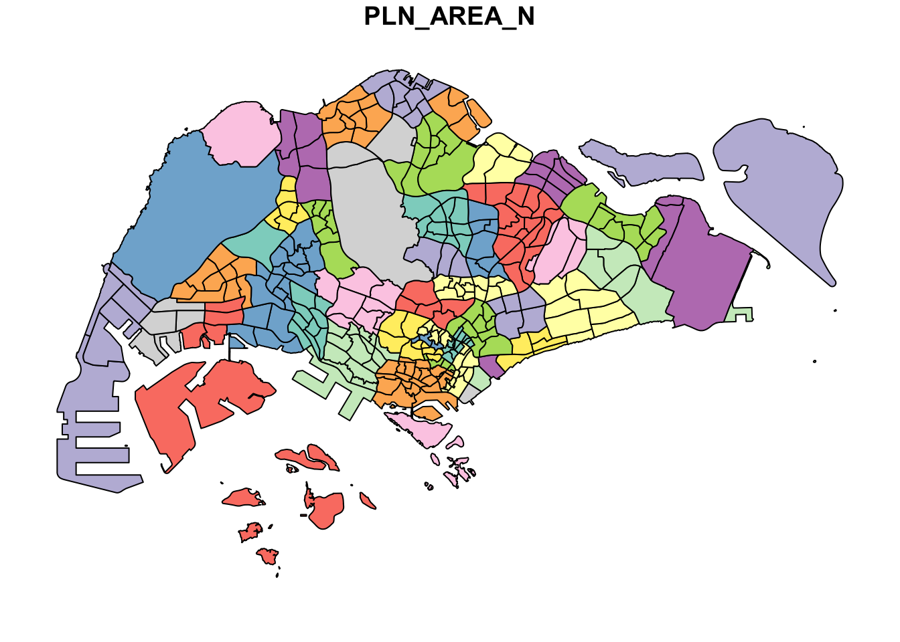
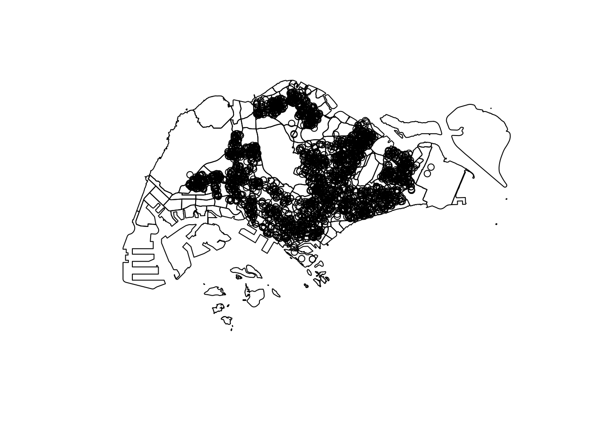
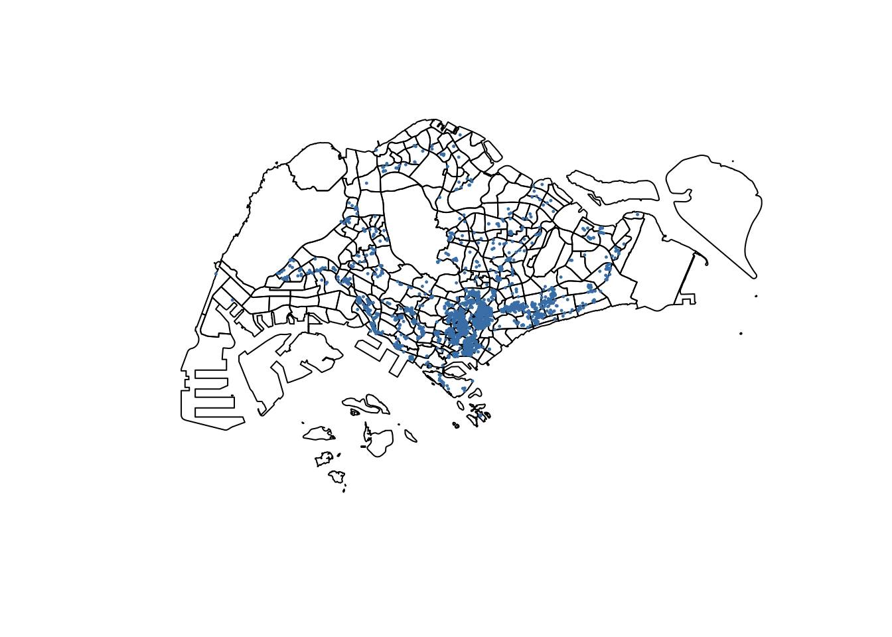
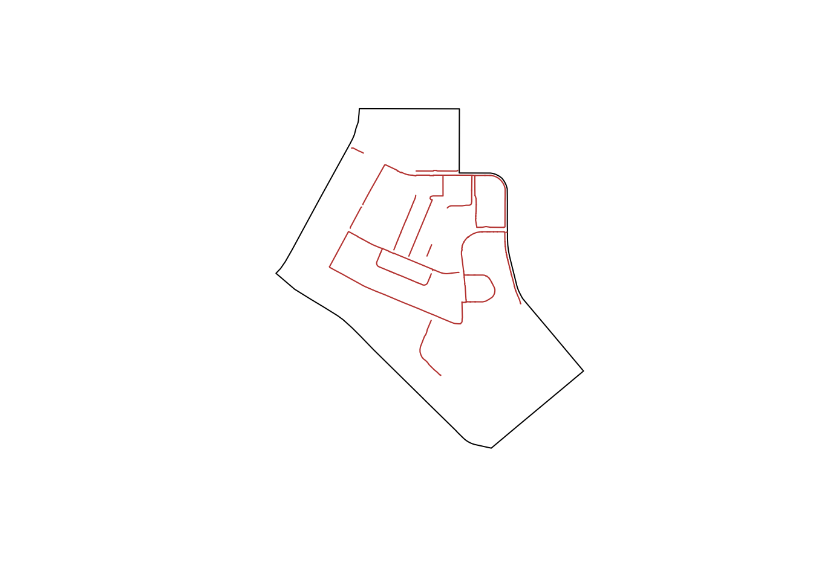
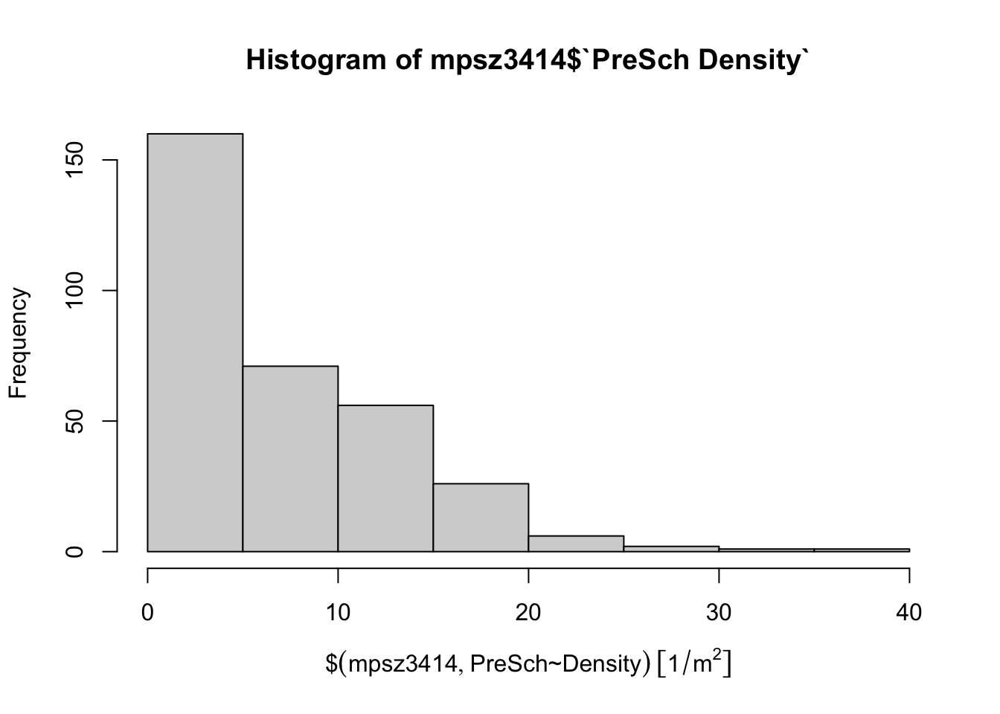
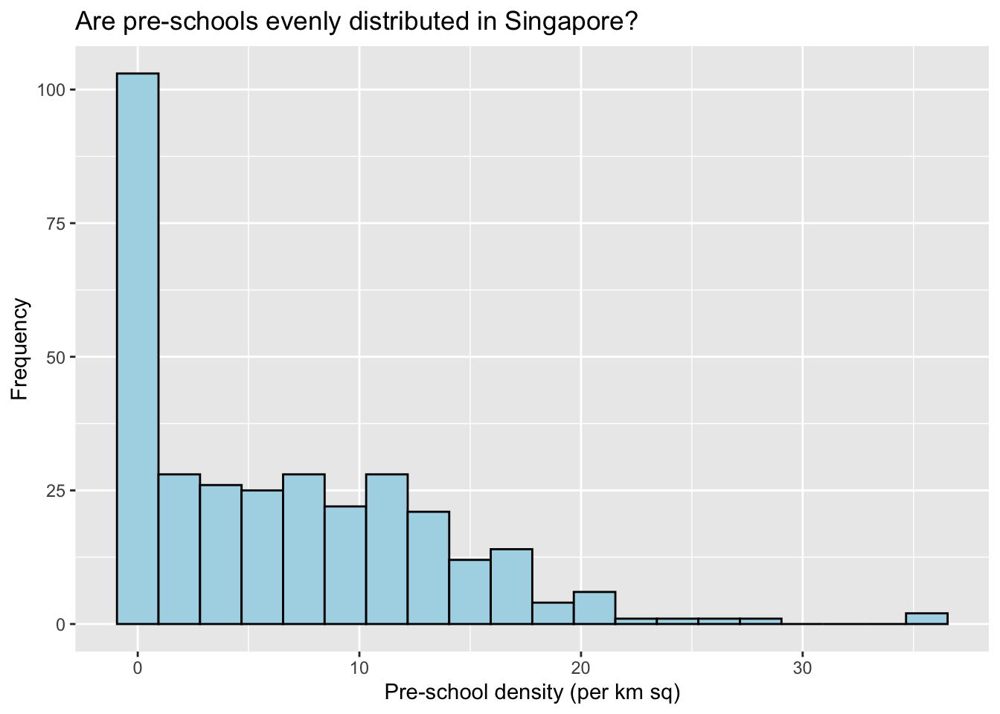
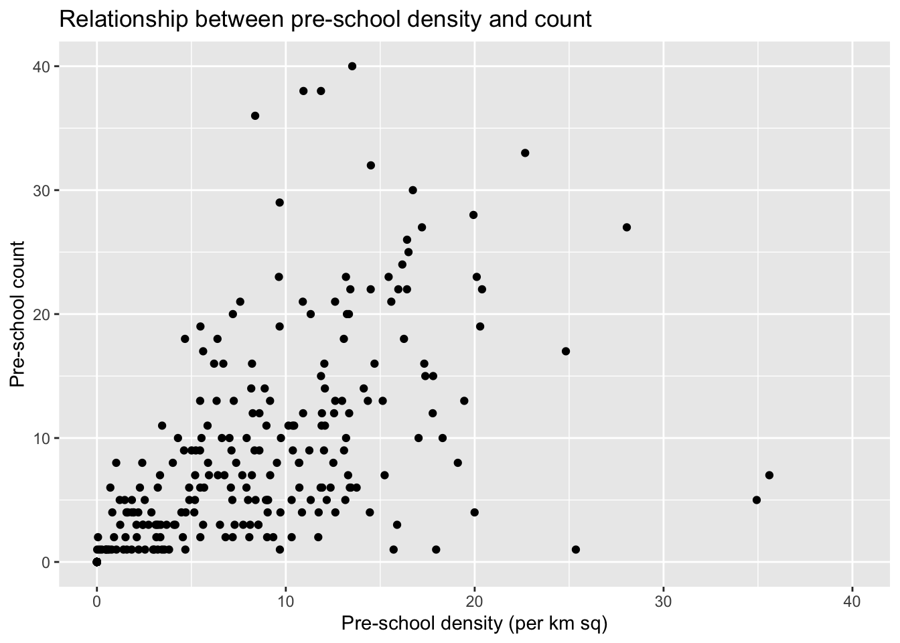
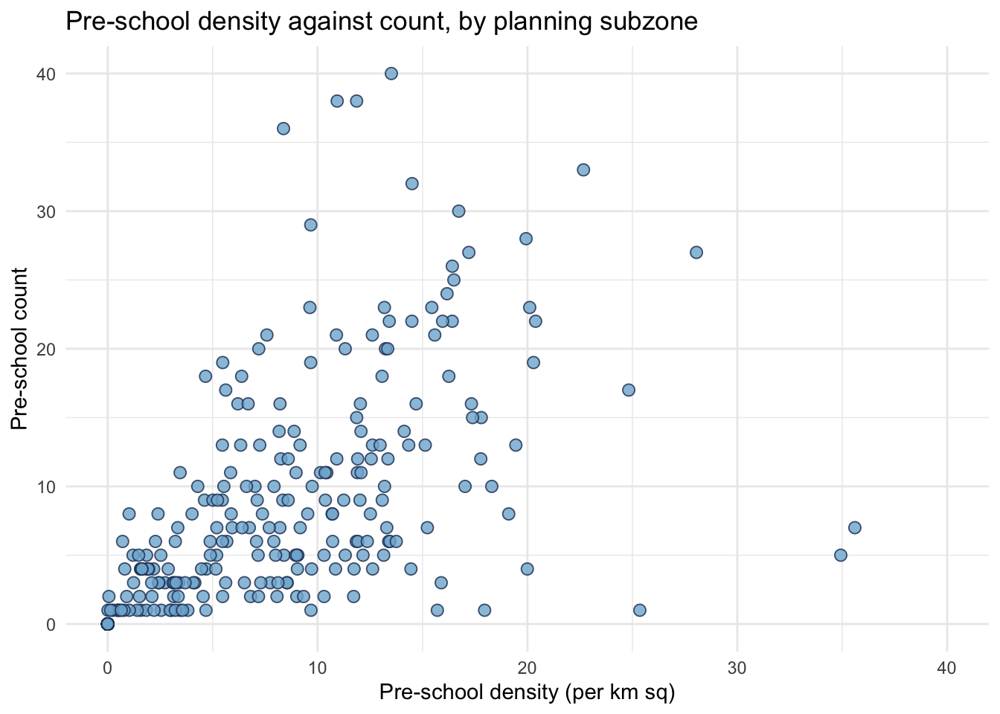
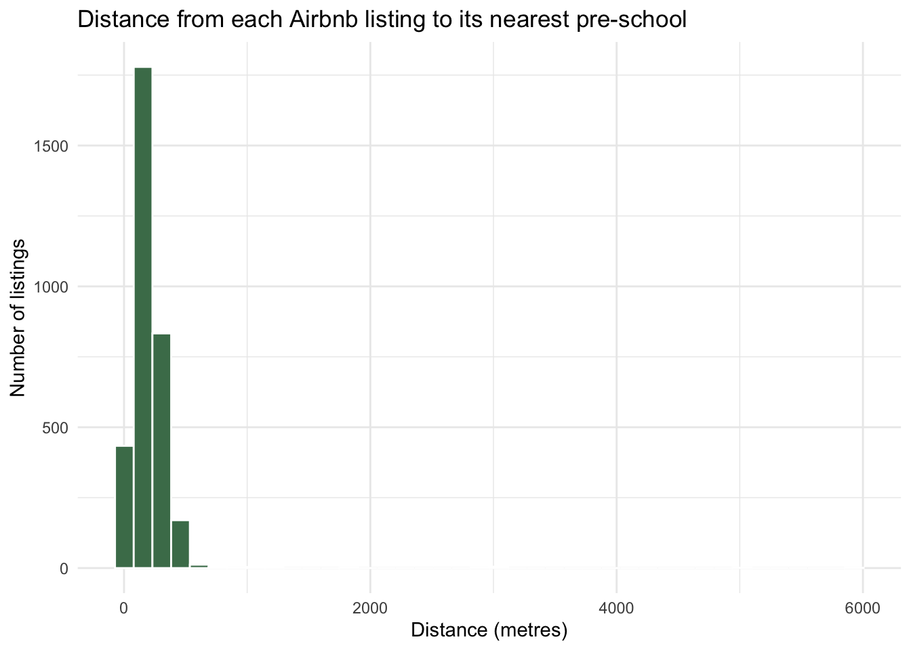
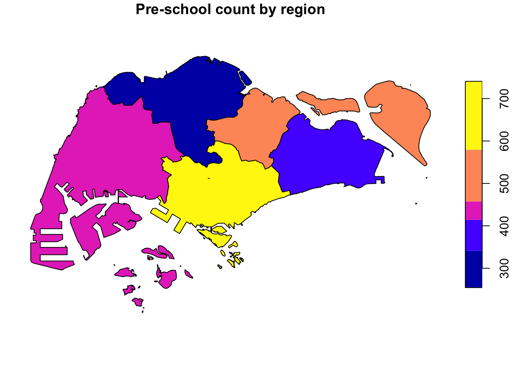

pacman::p_load(sf, tidyverse)Nor Hendra
Geospatial Analytics & Applications
Hands-on Exercise 1A: Geospatial Data Science with R
1. Learning Outcome
Geospatial Data Science is the process of importing, wrangling, integrating, and processing geographically referenced data sets. In this hands-on exercise, I learned how to perform geospatial data science tasks in R by using the sf package.
By the end of this exercise, I acquired the following competencies:
- installing and loading sf and tidyverse packages into the R environment,
- importing geospatial data by using appropriate functions of the sf package,
- importing aspatial data by using appropriate functions of the readr package,
- exploring the content of a simple feature data frame by using appropriate Base R and sf functions,
- assigning or transforming coordinate systems by using appropriate sf functions,
- converting aspatial data into an sf data frame by using appropriate functions of the sf package,
- performing geoprocessing tasks by using appropriate functions of the sf package,
- performing data wrangling tasks by using appropriate functions of the dplyr package, and
- performing Exploratory Data Analysis (EDA) by using appropriate functions from the ggplot2 package.
Note
I made it a habit to read the reference guide of each function, especially the input data requirements, syntax, and argument options, before using them.
ImportantNote on data formats used in this write-up
The reference material describes the subzone boundary and cycling path as ESRI shapefiles and the pre-school locations as a KML. What I actually downloaded from data.gov.sg and LTA DataMall came as GeoJSON for all three geospatial layers instead. I adapted the code and the explanation accordingly, and flagged every place this changes something.
2. Data Acquisition
Data are key to any form of analytics, geospatial analytics included. Before analysing, the necessary data must first be assembled. For this exercise, I extracted the following data sets:
- Master Plan 2014 Subzone Boundary (No Sea), GeoJSON, from data.gov.sg
- Pre-Schools Location, GeoJSON, from data.gov.sg
- Cycling Path Network, GeoJSON, from data.gov.sg
- Latest version of Singapore Airbnb listing data, CSV, from Inside Airbnb
2.1 Folder structure
Inside Hands-on_Ex01, I created a data sub-folder, and within it two further sub-folders named geospatial and aspatial.
The three GeoJSON files were placed directly into geospatial and listings.csv was placed into aspatial.
Hands-on_Ex01/
└── data/
├── geospatial/
│ ├── MasterPlan2014SubzoneBoundaryNoSea.geojson
│ ├── PreSchoolsLocation.geojson
│ └── CyclingPathNetworkGEOJSON.geojson
└── aspatial/
└── listings.csv3. Getting Started
Two R packages are used in this exercise:
- sf for importing, managing, and processing geospatial data, and
- tidyverse for performing data science tasks such as importing, wrangling and visualising data.
Note
Tidyverse is a family of R packages. The ones I actually rely on here are readr for importing csv data, tidyr for manipulating data, dplyr for transforming data, and ggplot2 for visualising data.
The p_load() function of the pacman package installs and loads sf and tidyverse into the R environment in a single call. That is why it is preferred over install.packages() followed by library().
4. Importing Geospatial Data
In this section I imported the following geospatial data into R by using st_read() of the sf package:
MasterPlan2014SubzoneBoundaryNoSea, a polygon feature layer in GeoJSON format,CyclingPathNetworkGEOJSON, a line feature layer in GeoJSON format, andPreSchoolsLocation, a point feature layer in GeoJSON format.
Note
Every layer here is a single self-contained file, so the import uses one path argument rather than the dsn / layer pair the reference material uses for its shapefile. st_read() auto-detects the driver (shapefile, KML, GeoJSON, and so on) from the file itself.
4.1 Importing the subzone boundary
mpsz <- st_read("data/geospatial/MasterPlan2014SubzoneBoundaryNoSea.geojson")Reading layer `MP14_SUBZONE_NO_SEA_PL' from data source
`/Users/norhendra/norhendra/ISSS626-GAA/Hands-on_Ex/Hands-on_Ex01/data/geospatial/MasterPlan2014SubzoneBoundaryNoSea.geojson'
using driver `GeoJSON'
Simple feature collection with 323 features and 13 fields
Geometry type: MULTIPOLYGON
Dimension: XY
Bounding box: xmin: 103.6057 ymin: 1.158699 xmax: 104.0885 ymax: 1.470775
Geodetic CRS: WGS 84The message reveals 323 polygon features, matching the 2014 subzone count reported in the reference material. Unlike the shapefile version, the coordinate reference system reads as WGS84 (EPSG:4326) straight away, with a bounding box in decimal degrees rather than the tens of thousands of metres a projected layer would show. GeoJSON coordinates are always geographic per the format spec, regardless of what CRS the source data was originally surveyed in.
4.2 Importing the cycling path network
cyclingpath <- st_read("data/geospatial/CyclingPathNetworkGEOJSON.geojson")Reading layer `CYCLINGPATH' from data source
`/Users/norhendra/norhendra/ISSS626-GAA/Hands-on_Ex/Hands-on_Ex01/data/geospatial/CyclingPathNetworkGEOJSON.geojson'
using driver `GeoJSON'
Simple feature collection with 8523 features and 6 fields
Geometry type: MULTILINESTRING
Dimension: XY
Bounding box: xmin: 103.637 ymin: 1.265428 xmax: 103.9664 ymax: 1.467361
Geodetic CRS: WGS 84This layer has 8,523 line features and 6 attribute fields. That is noticeably more paths than the 4,651 the reference material describes, since LTA’s published cycling path network has been extended since the book was written. It also carries far fewer attribute columns than the reference material’s 19-field shapefile version (OBJECTID_1, CYL_PATH, AGENCY_MAINT, INC_CRC, FMEL_UPD_D, SHAPE_1.LEN). None of those extra shapefile fields are actually used later in this exercise though, so it has no effect on the analysis.
ImportantCorrection to the reference material
The reference chapter describes the cycling path layer as being similar to “the MP19_SUBZONE_WEB_PL shape file.” That is a typo carried over from the book. The subzone layer imported in Section 4.1 is Master Plan 2014, not MP19. This matters because Hands-on Exercise 2 genuinely does use the Master Plan 2019 boundary, and mixing the two up invites confusion about which vintage of subzone boundary is actually in play.
4.3 Importing pre-school locations
preschool <- st_read("data/geospatial/PreSchoolsLocation.geojson")Reading layer `PreSchoolsLocation' from data source
`/Users/norhendra/norhendra/ISSS626-GAA/Hands-on_Ex/Hands-on_Ex01/data/geospatial/PreSchoolsLocation.geojson'
using driver `GeoJSON'
Simple feature collection with 2290 features and 2 fields
Geometry type: POINT
Dimension: XYZ
Bounding box: xmin: 103.6878 ymin: 1.247759 xmax: 103.9897 ymax: 1.462134
z_range: zmin: 0 zmax: 0
Geodetic CRS: WGS 84The message reveals 2,290 point features and only 2 fields, Name and Description. This actually matches the reference material’s own KML import, since this GeoJSON was clearly exported directly from the original KML without flattening its attribute table. Description still holds an HTML table with CENTRE_NAME, CENTRE_CODE, and update-date fields embedded as markup rather than as proper columns. I don’t need those attribute values for this exercise, so I leave the field as is here. The equivalent parsing step is covered properly in Hands-on Exercise 2, where the attributes are actually used.
ImportantCorrection to the reference material
The reference chapter imports the pre-school layer and transforms it in the same step:
preschool = st_read("chap01/data/geospatial/PreSchoolsLocation.kml") %>%
st_transform(crs = 3414)I deliberately do not do this. Applying st_transform() at import time undermines the book’s own later narrative. Its Section 1.6 explains that the preschool points “failed to plot on top of the mpsz layer” due to a CRS mismatch, and its Section 1.7.2 claims the printout still “reveals wgs84 coordinate system.” But if the transform already ran at import, neither of those statements would be true, and the book’s own before and after printouts for that section are identical to each other. I import without transforming, and apply the transform later in Section 7, where it belongs.
5. Checking the Content of A Simple Feature Data Frame
Before wrangling geospatial data, it is good practice to get to know the data set first.
5.1 Working with st_geometry()
st_geometry(mpsz)Geometry set for 323 features
Geometry type: MULTIPOLYGON
Dimension: XY
Bounding box: xmin: 103.6057 ymin: 1.158699 xmax: 104.0885 ymax: 1.470775
Geodetic CRS: WGS 84
First 5 geometries:This displays the geometry type, the geographic extent, and the coordinate system, which is WGS84 for the reasons noted in Section 4.1.
5.2 Working with glimpse()
glimpse(mpsz)Rows: 323
Columns: 14
$ OBJECTID_1 <int> 21, 22, 23, 24, 25, 26, 27, 28, 29, 30, 31, 32, 33, 34, 3…
$ SUBZONE_NO <int> 2, 2, 3, 4, 5, 4, 10, 12, 4, 6, 1, 1, 3, 8, 3, 7, 9, 2, 1…
$ SUBZONE_N <chr> "PEOPLE'S PARK", "BUKIT MERAH", "CHINATOWN", "PHILLIP", "…
$ SUBZONE_C <chr> "OTSZ02", "BMSZ02", "OTSZ03", "DTSZ04", "DTSZ05", "OTSZ04…
$ CA_IND <chr> "Y", "N", "Y", "Y", "Y", "Y", "N", "Y", "N", "Y", "Y", "Y…
$ PLN_AREA_N <chr> "OUTRAM", "BUKIT MERAH", "OUTRAM", "DOWNTOWN CORE", "DOWN…
$ PLN_AREA_C <chr> "OT", "BM", "OT", "DT", "DT", "OT", "BM", "DT", "BM", "DT…
$ REGION_N <chr> "CENTRAL REGION", "CENTRAL REGION", "CENTRAL REGION", "CE…
$ REGION_C <chr> "CR", "CR", "CR", "CR", "CR", "CR", "CR", "CR", "CR", "CR…
$ INC_CRC <chr> "B4120D23006C932A", "1C51019439A68700", "0FF1661344C84AED…
$ FMEL_UPD_D <chr> "20160511160621", "20160511160621", "20160511160621", "20…
$ SHAPE_1.AREA <dbl> 93140.44, 411722.82, 587222.68, 39437.94, 188767.49, 1330…
$ SHAPE_1.LEN <dbl> 1822.1927, 3074.9632, 4297.5999, 871.5549, 1872.7522, 160…
$ geometry <MULTIPOLYGON [°]> MULTIPOLYGON (((103.8432 1...., MULTIPOLYGON…The field names in this GeoJSON differ from the reference material’s shapefile in a couple of ways worth flagging.
NoteCorrection to the reference material
The reference chapter describes area and length fields as SHAPE_L and SHAPE_AREA, and elsewhere as SHAPE_Leng / SHAPE_Area. Neither matches what’s actually in this file. The GeoJSON export names them SHAPE_1.LEN and SHAPE_1.AREA, and there is no X_ADDR / Y_ADDR pair at all (those were shapefile-specific centroid columns that didn’t carry over into the GeoJSON export). None of these fields are used in the calculations later in this exercise, since I derive area independently with st_area() in Section 9, so the mismatch doesn’t affect the analysis. It would still break any code copied verbatim from the reference material that references these columns by name.
5.3 Working with head()
head(mpsz, n = 5) Simple feature collection with 5 features and 13 fields
Geometry type: MULTIPOLYGON
Dimension: XY
Bounding box: xmin: 103.8131 ymin: 1.274155 xmax: 103.8532 ymax: 1.286506
Geodetic CRS: WGS 84
OBJECTID_1 SUBZONE_NO SUBZONE_N SUBZONE_C CA_IND PLN_AREA_N PLN_AREA_C
1 21 2 PEOPLE'S PARK OTSZ02 Y OUTRAM OT
2 22 2 BUKIT MERAH BMSZ02 N BUKIT MERAH BM
3 23 3 CHINATOWN OTSZ03 Y OUTRAM OT
4 24 4 PHILLIP DTSZ04 Y DOWNTOWN CORE DT
5 25 5 RAFFLES PLACE DTSZ05 Y DOWNTOWN CORE DT
REGION_N REGION_C INC_CRC FMEL_UPD_D SHAPE_1.AREA
1 CENTRAL REGION CR B4120D23006C932A 20160511160621 93140.44
2 CENTRAL REGION CR 1C51019439A68700 20160511160621 411722.82
3 CENTRAL REGION CR 0FF1661344C84AED 20160511160621 587222.68
4 CENTRAL REGION CR 615D4EDDEF809F8E 20160511160621 39437.94
5 CENTRAL REGION CR 72107B11807074F4 20160511160621 188767.49
SHAPE_1.LEN geometry
1 1822.1927 MULTIPOLYGON (((103.8432 1....
2 3074.9632 MULTIPOLYGON (((103.8221 1....
3 4297.5999 MULTIPOLYGON (((103.8438 1....
4 871.5549 MULTIPOLYGON (((103.8496 1....
5 1872.7522 MULTIPOLYGON (((103.8525 1....6. Plotting the Geospatial Data
plot(st_geometry(mpsz))
plot(mpsz["PLN_AREA_N"])
Tip
plot() is appropriate for a quick look at a geospatial object. For high cartographic quality maps, a package such as tmap should be used, which is exactly what Hands-on Exercise 2 covers.
Now let me try plotting the preschool layer on top of the mpsz layer.
plot(st_geometry(mpsz))
plot(st_geometry(preschool),
add = TRUE)
ImportantWhere this diverges from the reference material
In the reference material, this exact overlay fails, because its mpsz is a shapefile already in SVY21 (coordinates in metres) while preschool is a KML in WGS84 (coordinates in degrees). Plotting the two together puts the preschool points far outside the subzone boundaries’ plotting extent.
That failure doesn’t reproduce here. Both layers are GeoJSON, and GeoJSON is always WGS84 by specification. There is no coordinate system mismatch to cause a visible failure, so the overlay above already looks correct. This is a genuine consequence of the different file formats, not something I fixed on purpose.
It does not mean the projection step in Section 7 is unnecessary though. WGS84 stores angular degrees, not metres. Any calculation that assumes metric units, such as a 5 metre buffer or an area in square kilometres, will silently misinterpret those degrees as metres unless the data is first transformed to a projected coordinate system. The visual overlay working is not the same thing as the data being fit for measurement.
7. Working with Projection
Map projection is an important property of geospatial data. To perform geoprocessing that involves distance or area (buffering, area calculation), the data must be in a projected coordinate system with metric units, regardless of whether the layers visually align in WGS84.
NoteWhy this matters, from the lesson slides
Geographic coordinate systems (GCS) such as wgs84 define locations on a three-dimensional spherical surface and give accurate positional information, but they are not appropriate for distance and area measurements. One degree at the north pole spans a far shorter ground distance than one degree at the equator.
Projected coordinate systems (PCS) such as svy21 provide consistent length and area measurement across space. This is exactly why a transformation from GCS to PCS is required before any of the buffering, area, or density calculations in Section 9.
7.1 Checking the coordinate reference system
st_crs(mpsz)Coordinate Reference System:
User input: WGS 84
wkt:
GEOGCRS["WGS 84",
DATUM["World Geodetic System 1984",
ELLIPSOID["WGS 84",6378137,298.257223563,
LENGTHUNIT["metre",1]]],
PRIMEM["Greenwich",0,
ANGLEUNIT["degree",0.0174532925199433]],
CS[ellipsoidal,2],
AXIS["geodetic latitude (Lat)",north,
ORDER[1],
ANGLEUNIT["degree",0.0174532925199433]],
AXIS["geodetic longitude (Lon)",east,
ORDER[2],
ANGLEUNIT["degree",0.0174532925199433]],
ID["EPSG",4326]]This correctly reports EPSG:4326 (WGS84).
NoteWhy the reference material’s EPSG-9001 problem doesn’t appear here
The reference chapter spends a subsection fixing a wrongly labelled CRS. Its shapefile’s .prj file is incomplete, so st_crs() reports EPSG 9001, which isn’t even a coordinate system (it’s the EPSG code for the unit metre), instead of the correct 3414. The fix there is st_set_crs(), which relabels metadata without moving any coordinates.
That specific failure mode is a shapefile artefact. .prj files are a separate sidecar file that’s easy to omit or corrupt during a shapefile export. GeoJSON has no equivalent sidecar to go missing. The CRS is either implied as WGS84 by the format spec (as here) or stated explicitly inside the file itself. So there is no mislabelled CRS bug to fix in this data, and st_set_crs() isn’t the right tool here since my CRS label is already correct. What I need instead is a genuine coordinate transformation, covered next.
7.2 Transforming the geospatial layers to svy21
Since all three geospatial layers came in as WGS84, all three need st_transform() before any metric geoprocessing.
mpsz3414 <- st_transform(mpsz, crs = 3414)
preschool3414 <- st_transform(preschool, crs = 3414)
cyclingpath3414 <- st_transform(cyclingpath, crs = 3414)
Note
Confirming the transformation took effect. The bounding box should now be in the tens of thousands, not single digits:
st_geometry(mpsz3414)Geometry set for 323 features
Geometry type: MULTIPOLYGON
Dimension: XY
Bounding box: xmin: 2667.538 ymin: 15748.72 xmax: 56396.44 ymax: 50256.33
Projected CRS: SVY21 / Singapore TM
First 5 geometries:st_geometry(preschool3414)Geometry set for 2290 features
Geometry type: POINT
Dimension: XYZ
Bounding box: xmin: 11810.03 ymin: 25596.33 xmax: 45404.24 ymax: 49300.88
z_range: zmin: 0 zmax: 0
Projected CRS: SVY21 / Singapore TM
First 5 geometries:This is the point where the projection actually starts to matter for this exercise, even though the plots in Section 6 looked fine without it. Everything from here on, including Section 9’s buffers and areas, depends on these transformed versions rather than the originals.
8. Importing and Converting Aspatial Data
In practice it is not unusual to come across data such as the Inside Airbnb listings file. This is called aspatial data because it is not geospatial data, but among its data fields there are two that capture the x and y coordinates of the data points.
8.1 Importing the aspatial data
listings <- read_csv("data/aspatial/listings.csv")
ImportantCorrection to the reference material
The reference chapter states that “listing tibble data frame consists of 4252 rows and 16 columns,” while its own printed output directly above that sentence shows a different figure again. Inside Airbnb republishes its listings quarterly, so the exact row and column count will keep shifting for anyone downloading it fresh. My own file has yet another column count, since it happens to include a host_profile_id field the reference material’s copy did not. This is exactly why I read the dimensions off the object programmatically instead of quoting a number from the book:
dim(listings)[1] 3247 19The two fields I need for the next step are latitude and longitude, in decimal degree format, so as with the geospatial layers this is wgs84.
8.2 Creating a simple feature data frame from an aspatial data frame
listings_sf <- st_as_sf(listings,
coords = c("longitude", "latitude"),
crs = 4326) %>%
st_transform(crs = 3414)Things to learn from the arguments above:
- the
coordsargument requires the column name of the x-coordinates first, then the column name of the y-coordinates. Reversing them is a silent error since the points will still be created, just in entirely the wrong places. - the
crsargument requires the coordinate system in EPSG format. EPSG:4326 is the wgs84 Geographic Coordinate System and EPSG:3414 is the Singapore SVY21 Projected Coordinate System. %>%nestsst_transform()so the result is immediately in the svy21 projected coordinate system, consistent with the geospatial layers transformed in Section 7.
glimpse(listings_sf)Rows: 3,247
Columns: 18
$ id <dbl> 71609, 71896, 71903, 294281, 344803, 36…
$ name <chr> "Ensuite Room (Room 1 & 2) near EXPO", …
$ host_id <dbl> 367042, 367042, 367042, 1521514, 367042…
$ host_profile_id <dbl> 1.462517e+18, 1.462517e+18, 1.462517e+1…
$ host_name <chr> "Belinda", "Belinda", "Belinda", "Elizb…
$ neighbourhood_group <chr> "East Region", "East Region", "East Reg…
$ neighbourhood <chr> "Tampines", "Tampines", "Tampines", "Ne…
$ room_type <chr> "Private room", "Private room", "Privat…
$ price <dbl> NA, NA, NA, 32, 15, NA, 26, 11, 28, 48,…
$ minimum_nights <dbl> 92, 92, 92, 92, 92, 92, 92, 92, 92, 92,…
$ number_of_reviews <dbl> 19, 24, 46, 131, 60, 81, 163, 20, 0, 17…
$ last_review <date> 2020-01-17, 2019-10-13, 2020-01-09, 20…
$ reviews_per_month <dbl> 0.11, 0.13, 0.25, 0.75, 0.34, 0.52, 0.9…
$ calculated_host_listings_count <dbl> 5, 5, 5, 7, 5, 7, 7, 4, 2, 1, 8, 1, 73,…
$ availability_365 <dbl> 90, 90, 90, 364, 364, 364, 364, 364, 36…
$ number_of_reviews_ltm <dbl> 0, 0, 0, 0, 0, 0, 0, 0, 0, 0, 0, 0, 0, …
$ license <chr> NA, NA, NA, NA, NA, NA, NA, NA, NA, NA,…
$ geometry <POINT [m]> POINT (41972.5 36390.05), POINT (…Plotting listings_sf on top of mpsz3414:
plot(st_geometry(mpsz3414))
plot(st_geometry(listings_sf),
add = TRUE,
pch = 20,
cex = 0.3,
col = "steelblue")
9. Geoprocessing with sf package
Beyond handling geospatial data (importing, exporting, assigning projections, transforming projections), the sf package also offers a wide range of geoprocessing (GIS analysis) functions.
NoteGrounding this in the OGC standard
From the lesson slides, the OGC OpenGIS Implementation Standard / ISO 19125 defines methods that support spatial analysis, including distance, buffer, convex hull, intersection, union, difference and symmetric difference, all of which return new geometric objects. The sf functions used below are R’s implementation of exactly that standard, which is why the same verbs show up in PostGIS and QGIS.
9.1 Use case 1: Land acquisition analysis
9.1.1 The scenario
The authority is planning to upgrade the existing cycling path. To do so, they need to acquire 5 metres of reserved land on both sides of the existing cycling path. I am tasked to determine the extent of the land needing to be acquired and its total area.
9.1.2 The solution
buffer_cycling <- st_buffer(cyclingpath3414,
dist = 5,
nQuadSegs = 30)
Note
dist = 5 is interpreted in the units of the layer’s CRS. Because cyclingpath3414 has already been transformed to svy21 (metres), this correctly produces a 5 metre buffer. Had I skipped Section 7.2 and buffered the original wgs84 cyclingpath instead, dist = 5 would have been read as 5 degrees, roughly 550 km. That is exactly why the transform in Section 7 matters regardless of the overlay in Section 6 having looked fine.
buffer_cycling <- buffer_cycling %>%
mutate(AREA = st_area(geometry))sum(buffer_cycling$AREA)4989654 [m^2]mpsz_selected <- mpsz3414 %>%
filter(SUBZONE_N == "TAMPINES WEST")buffer_cycling_selected <- st_intersection(buffer_cycling,
mpsz_selected)plot(st_geometry(mpsz_selected))
plot(st_geometry(buffer_cycling_selected),
col = "#C1443C",
border = NA,
add = TRUE)
9.2 Use case 2: Number of pre-schools by planning subzone
9.2.1 The scenario
The authority requires a count of pre-schools for each planning subzone to support forward planning.
9.2.2 The solution
mpsz3414$`PreSch Count` <- lengths(st_intersects(mpsz3414, preschool3414))
Warning
st_intersects() should not be confused with st_intersection(). The former is a predicate returning which features touch or overlap. The latter is a geometry-generating operator returning new clipped geometries.
Note also that the reference chapter uses lengths() here (plural, the vectorised form) while its surrounding prose describes it as length() (singular). Only lengths() produces a per-subzone count.
summary(mpsz3414$`PreSch Count`) Min. 1st Qu. Median Mean 3rd Qu. Max.
0.00 0.00 4.00 7.09 10.00 72.00 top_n(mpsz3414, 1, `PreSch Count`)Simple feature collection with 1 feature and 14 fields
Geometry type: MULTIPOLYGON
Dimension: XY
Bounding box: xmin: 39655.33 ymin: 35966 xmax: 42940.57 ymax: 38622.37
Projected CRS: SVY21 / Singapore TM
OBJECTID_1 SUBZONE_NO SUBZONE_N SUBZONE_C CA_IND PLN_AREA_N PLN_AREA_C
1 204 2 TAMPINES EAST TMSZ02 N TAMPINES TM
REGION_N REGION_C INC_CRC FMEL_UPD_D SHAPE_1.AREA SHAPE_1.LEN
1 EAST REGION ER 21658EAAF84F4D8D 20160511160621 4339824 10180.62
geometry PreSch Count
1 MULTIPOLYGON (((42196.76 38... 72mpsz3414 <- mpsz3414 %>%
mutate(Area = st_area(geometry))
Note
The reference chapter writes this as mpsz$Area <- mpsz %>% st_area(), mixing base assignment with a pipe. I use the tidier mutate() form instead, consistent with how AREA was computed in Section 9.1.2.
mpsz3414 <- mpsz3414 %>%
mutate(`PreSch Density` = `PreSch Count` / Area * 1000000)The multiplier of 1,000,000 converts from counts per square metre to counts per square kilometre, since st_area() returns metres squared for an svy21 layer.
9.3 Exploratory Data Analysis
hist(mpsz3414$`PreSch Density`)
ggplot(data = mpsz3414,
aes(x = as.numeric(`PreSch Density`))) +
geom_histogram(bins = 20,
color = "black",
fill = "light blue") +
labs(title = "Are pre-schools evenly distributed in Singapore?",
x = "Pre-school density (per km sq)",
y = "Frequency")
ggplot(data = mpsz3414,
aes(y = `PreSch Count`,
x = as.numeric(`PreSch Density`))) +
geom_point(color = "black") +
xlim(0, 40) +
ylim(0, 40) +
labs(title = "Relationship between pre-school density and count",
x = "Pre-school density (per km sq)",
y = "Pre-school count")
ImportantCorrection to the reference material
The reference chapter writes this scatterplot with geom_point(color="black", fill="light blue"). fill has no effect here since geom_point() defaults to shape 19, a solid circle with no fill aesthetic, only colour. To actually use both, a fillable shape (21 to 25) is needed, demonstrated in the Extras.
10. Extras
10.1 Fixing the scatterplot properly with a fillable shape
ggplot(data = mpsz3414,
aes(y = `PreSch Count`,
x = as.numeric(`PreSch Density`))) +
geom_point(shape = 21,
colour = "#1E3A5F",
fill = "#7FB3D5",
size = 2.5,
alpha = 0.8) +
xlim(0, 40) +
ylim(0, 40) +
labs(title = "Pre-school density against count, by planning subzone",
x = "Pre-school density (per km sq)",
y = "Pre-school count") +
theme_minimal()
10.2 Geometry validity checks before geoprocessing
GeoJSON exports from open-data portals are somewhat more prone to invalid or duplicate-vertex geometries than curated shapefiles, so this check is worth running here specifically.
table(st_is_valid(mpsz3414))
FALSE TRUE
9 314 mpsz3414 <- st_make_valid(mpsz3414)
table(st_is_valid(mpsz3414))
TRUE
323 sum(st_is_empty(mpsz3414))[1] 010.3 Choosing the right spatial predicate
count_intersects <- lengths(st_intersects(mpsz3414, preschool3414))
count_contains <- lengths(st_contains(mpsz3414, preschool3414))
tibble(
predicate = c("st_intersects", "st_contains"),
total_counted = c(sum(count_intersects), sum(count_contains)),
actual_preschools = nrow(preschool3414)
)# A tibble: 2 × 3
predicate total_counted actual_preschools
<chr> <int> <int>
1 st_intersects 2290 2290
2 st_contains 2290 2290If st_intersects totals more than the actual number of pre-schools, boundary points are being double counted between adjacent subzones.
10.4 Nearest-neighbour distance: how far is the nearest pre-school?
nearest_idx <- st_nearest_feature(listings_sf, preschool3414)
listings_sf <- listings_sf %>%
mutate(dist_to_preschool = st_distance(listings_sf,
preschool3414[nearest_idx, ],
by_element = TRUE))
summary(as.numeric(listings_sf$dist_to_preschool)) Min. 1st Qu. Median Mean 3rd Qu. Max.
2.781 116.824 177.282 205.953 262.881 5929.910 ggplot(data = listings_sf,
aes(x = as.numeric(dist_to_preschool))) +
geom_histogram(bins = 40,
fill = "#4A7C59",
colour = "white") +
labs(title = "Distance from each Airbnb listing to its nearest pre-school",
x = "Distance (metres)",
y = "Number of listings") +
theme_minimal()
10.5 A quick look at region-level aggregation
mpsz_region <- mpsz3414 %>%
group_by(REGION_N) %>%
summarise(`PreSch Count` = sum(`PreSch Count`),
Area = sum(Area)) %>%
mutate(`PreSch Density` = `PreSch Count` / Area * 1000000)
mpsz_region %>%
st_drop_geometry() %>%
arrange(desc(`PreSch Density`))# A tibble: 5 × 4
REGION_N `PreSch Count` Area `PreSch Density`
<chr> <int> [m^2] [1/m^2]
1 CENTRAL REGION 692 136405634. 5.07
2 NORTH-EAST REGION 467 136053572. 3.43
3 EAST REGION 380 112969680. 3.36
4 NORTH REGION 303 139405603. 2.17
5 WEST REGION 448 257110297. 1.74plot(mpsz_region["PreSch Count"],
main = "Pre-school count by region")